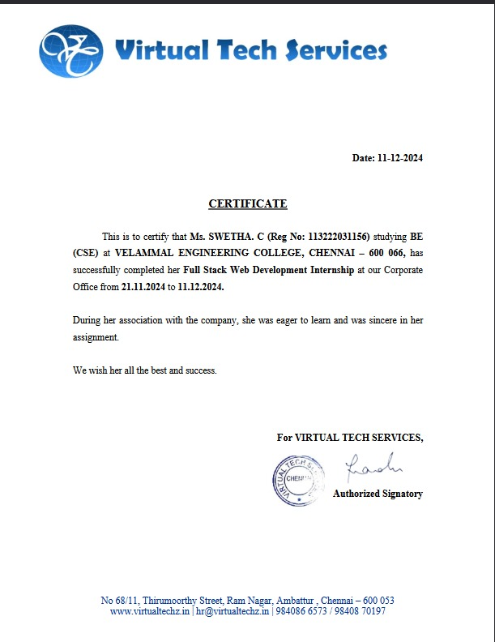
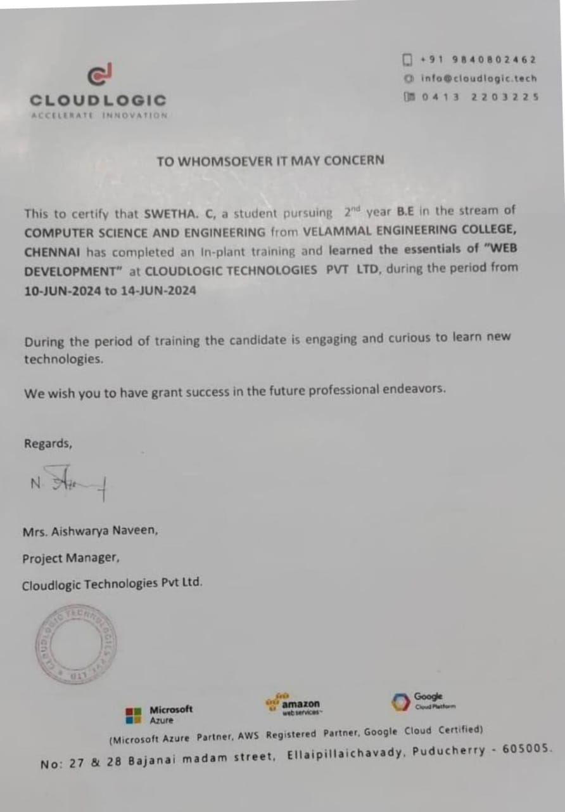

About Me
I am Swetha C, a passionate and dedicated 3rd-year Computer Science Engineering student at Velammal College. As a budding full-stack developer, I have honed my skills in HTML, CSS, JavaScript, SQL, PHP, and Java. I thrive on creating efficient, user-friendly web applications and enjoy learning new technologies to enhance my development capabilities. With a strong foundation in both front-end development, I am eager to contribute to innovative projects and expand my expertise in the tech world.
Education
-
BE,Computer Science And Engineering
Velammal Engineering College,Chennai-600 066.
Graduation-May 2026.
Skills
- HTML
- CSS
- JavaScript
- SQL
- PHP
- Java
Projects
-
Elegant Restaurant Website
Developed a responsive and interactive restaurant website using HTML, CSS, and JavaScript. The site features smooth animations, an engaging menu display, a photo gallery with effects, and a functional contact form. Designed to provide an exceptional user experience across all devices, showcasing modern web design and animation techniques.
-
Nostra E-Commerce Website
Developed an e-commerce platform, Nostra, utilizing HTML, CSS, and JavaScript for an interactive and responsive frontend, along with PHP for backend functionalities. The project features user authentication, product catalog management, a dynamic shopping cart, and secure order processing. Designed to deliver a smooth and efficient online shopping experience.
ADDITIONAL
- I Regulaely engage in coding on platforms such as codechef and skillrack.
- Skillrack successfully completed for SQL.
- Attended a 2 days webinar on Artificial Intelligence.
Internships
-
Full-Stack Development Internship
Virtual Tech Services

Duration: [21/11/2024 to 11/12/2024]
* Worked on both front-end and back-end development, contributing to real-world projects.
* Developed user-friendly and responsive interfaces using HTML, CSS, and JavaScript.
* Built and managed databases with SQL to ensure data integrity and efficient retrieval.
* Developed server-side logic and APIs using PHP or Java (whichever you used).
* Collaborated with team members to troubleshoot issues and improve application performance.
* Gained hands-on experience in the complete software development lifecycle, from design to deployment.
In-Plant Training
-
Full-Stack Development Internship
CLOUDLOGIC TECHNOLOGIES PVT LTD

Duration: [10/06/2024 to 14/06/2024]
* Acquired foundational knowledge of full-stack development through a structured training program.
* Gained expertise in designing and building dynamic web applications using HTML, CSS, and JavaScript.
* Learned to create and manage databases with SQL for efficient data storage and retrieval.
* Explored server-side programming using PHP, understanding backend logic and API development.
* Completed hands-on exercises and a practical project to implement full-stack principles effectively.